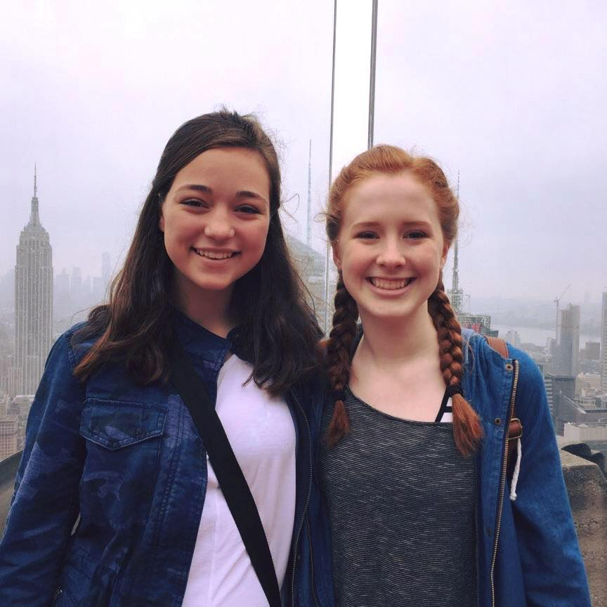

CLEARVIEW
About Us

Erika J is a Junior at Barrington High School in Barrington, Illinois. She is focused on her academics, but is also very involved in her school.She is in many clubs and activities including Science olympiad, German Club, and Soccer. Erika is eager to continue her studies after graduation 2018. She is undecided on what she want to major in but plans to go into STEAM or history. Erika has put in an immense amount of work into coding the ClearView Website. She is an open-minded, eccentric, and ambitious, young coder who wishes to one day achieve world domination.

Meriem B is a senior at William Fremd High School in Palatine, Illinois. She has not only pursued her interests in gymnastics and theatre but, has also excelled in school as both a part of the NHS and as a hardworking and perseverent student. After graduating from her high school in 2017, Meriem plans to attend college and continue work in the computer science field. Meriem is part of the code team for ClearView and worked tirelessly and with an immense amount of effort to create the website viewed here.
Briannah H is a junior at Rickover Naval Academy in Chicago, Illinois. She has a passion for drawing and is president of the Anime club at her high school. Briannah is a talented artist and programmer and looks forwards to a future in game design. After her 2018 high school graduation she hopes to attend college and major in computer science.
Oluwadamilola O is a senior at Rickover Naval Academy in Chicago, Illinois. During her leisure time, Dami loves to cook and dance, and she is apart of the bowling team at her school. Her favorite subject is chemistry and she plans on pursuing a major in biochemistry after her 2017 graduation from high school. She is also interested in joining various organizations that strongly fight against early child marriages as well as support girls education around the world. In the future, Dami hopes to work in a pharmaceutical company or lab.

Jessica C is a senior at Waubonsie Valley High School in Aurora, Illinois. Her extracurriculars involve organizations and clubs that help protect the environment, and she was on the bowling team at her high school for two years. Jessica is a respectful and tenacious individual, and was additionally a part of a leadership program for five years. After graduating college with a major in engineering, she plans on continuing a career in architecture and to possibly hold an occupation with Disney.